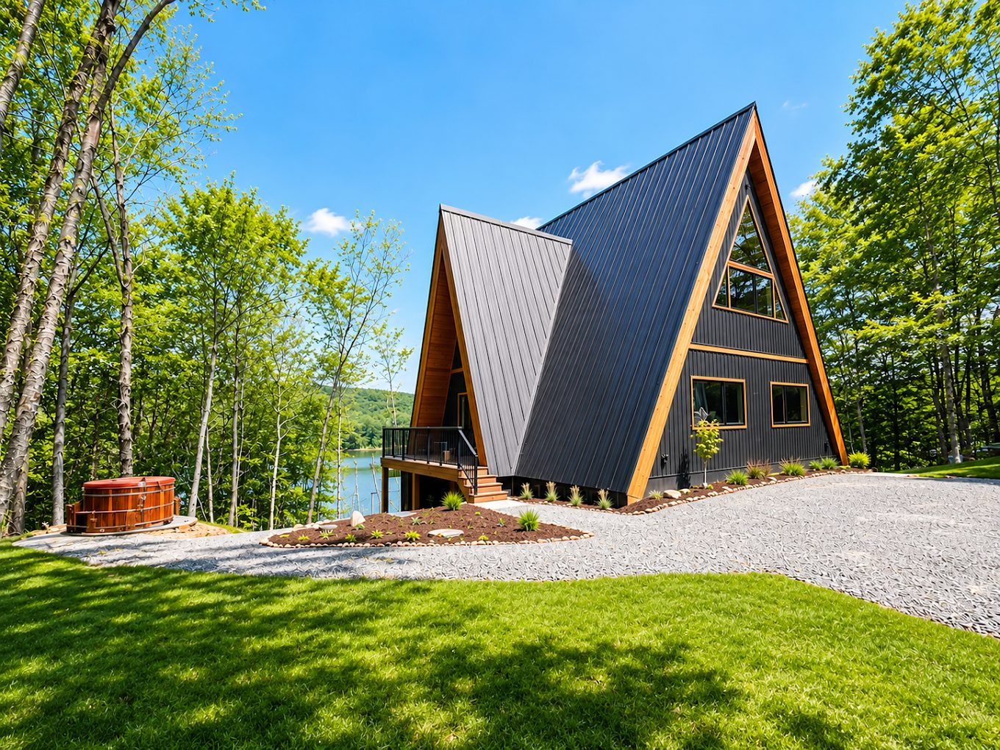
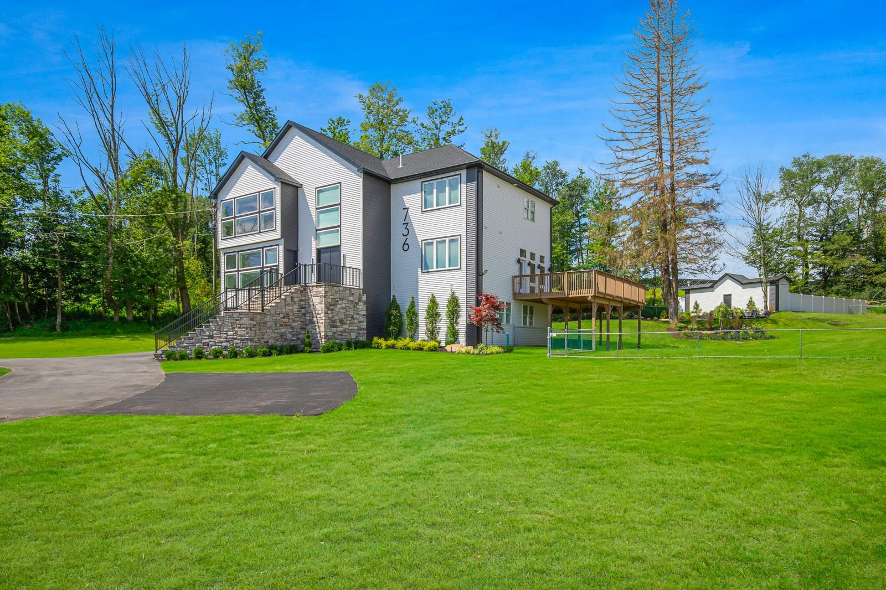

Project portfolio
Eight builds, every room, full resolution. This is the standard every Corestone project is held to.
Custom home
579 Shore Rd, Liberty, NY 12783
A lakeside A-frame taken from raw wooded lot to finished home. The full story of this build, phase by phase, is in our Dirt to Dream project diary.

Custom home
736 Harris Rd
Custom home with a finished backyard built for evenings outside: pool, spa bath, and an open kitchen at the center.

Custom home
1268 Old Rte 17
Custom home build on Old Route 17, designed and built by Corestone end to end.
Custom home
Spring Valley, NY
A modern custom home finished to a high standard: glass gable living room, cove-lit dining, and marble throughout.
Commercial
Route 59 · Monsey, NY
A full restaurant build-out. Commercial work with the same crew, the same standard, and a business that could open on schedule.
Commercial
Swan Lake, NY
A branded pizzeria build-out in Swan Lake: counter, kitchen line, and dining room ready for opening day.
Residential
Poughkeepsie, NY
Residential · 3,500 sq ft indoor · 1,500 sq ft outdoor · 3 stories · 2024
Custom homes, development, and commercial work across Sullivan and Orange County.
Request a quote